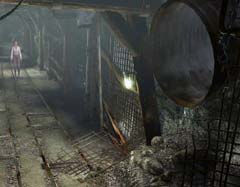
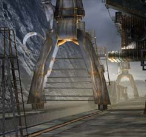

| 概要 | 地図 | |
| 淡いヒント集 | ヒント集 | 的確なヒント集 |
| 攻略最短ルート | Syberia 攻略へ |
| 場所選択に戻る |
注:完全なネタバレです
|
ヘレナ救出のイベント 檻の扉を調べる。 扉に付いた南京錠に対して、ペンチを使う。  (ヘレナが出てくる) 檻の奥にある、人形を調べる。 人形の手に対して、ドライバーを使う。 (オスカーの手を入手) 檻のある場所から、階段を下りる。 画面右下に進む。 (坑道のエレベータがある場所に出る) ヘレナをエレベーターに乗せる。 (床から格子が出てきて、ケイトが乗れなくなる) オスカーの手とドライバーをヘレナに渡す。 |
|
ケイト脱出のイベント 坑道のエレベーターに乗る。 坑道を奥へ進み、明かりを付ける装置の前へ行く。 (爆発) 明かりを付ける装置付近の通気口を調べる。  (網が外れ、中に入れる) 外に出られる。 |
|
コムコルツグラッド脱出イベント 坑道エレベーターを動かすレバー付近の、木箱を調べる。 (ふたが開いている木箱)  中にあるダイナマイトを入手。 機関車の前方へ向かい、オスカーと会話。 テラスへ向かい、機関車に乗る。 (機関車が止まる) ネジを巻く装置へ行き、足下にダイナマイトを付ける。  ケイトが機関車に戻り、機関車が出発。 |
| 場所選択に戻る |
| 概要 | 地図 | |
| 淡いヒント集 | ヒント集 | 的確なヒント集 |
| 攻略最短ルート | Syberia 攻略へ |
Syberia
| 目次へ戻る | ページの上部へ |